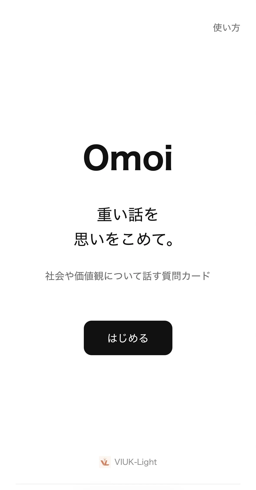
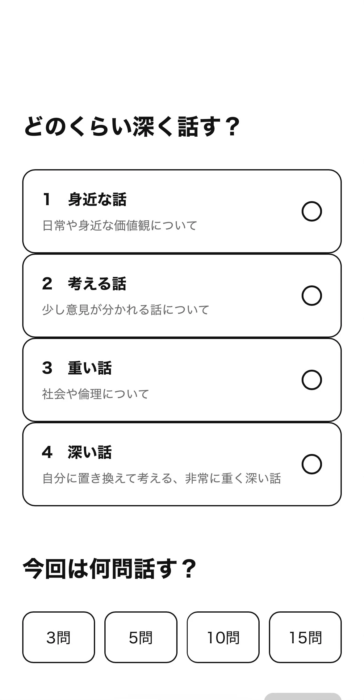
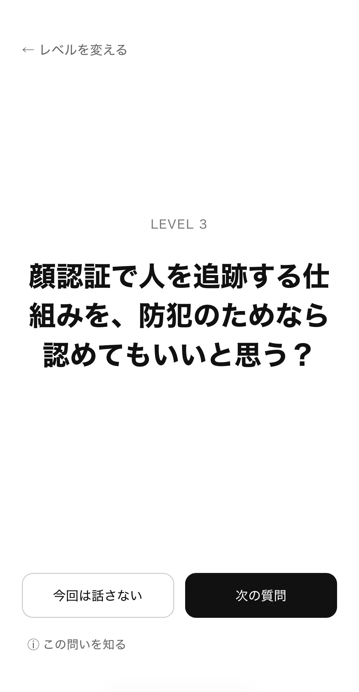
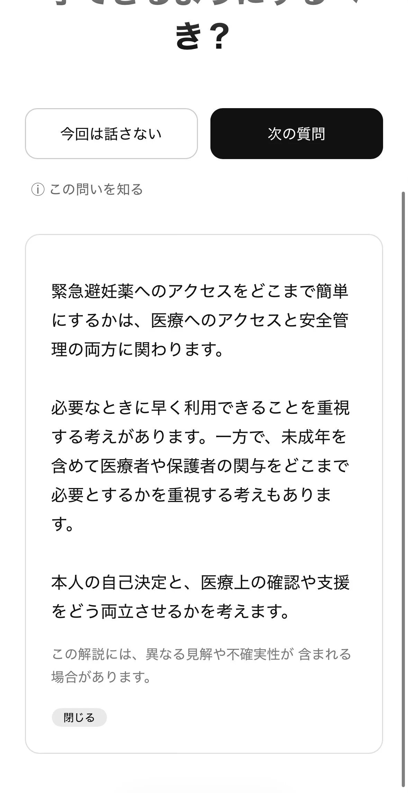

Omoiについて
質問カードとしてのOmoi
Omoiは、普段は重い、社会・倫理・価値観・人生について考える質問カードです。正解や点数を出すのではなく、誰かと話すきっかけや、自分の考えを見つめる時間をつくります。
使うときは、話の深さと問題数を選びます。質問を読んだあと、「次の質問」へ進むことも、「今回は話さない」とスキップすることもできます。
| 形態 | 静的Webアプリ。アカウントは不要です。 |
|---|---|
| 保存 | 会話の答えや内容は保存しません。 |
| 深さ | Level 1〜4。問題数は3・5・10・15問から選びます。 |
| 質問 | 公開カタログは643件です。 |
Omoiの基本的な流れ
Omoiの基本的な流れを、実際の画面で確認できます。


